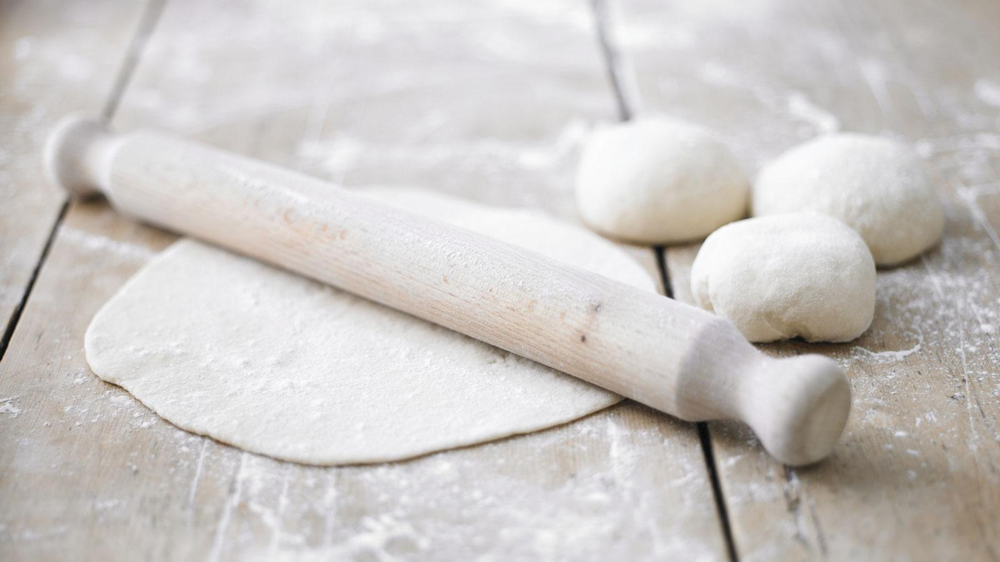

How to make easy pizza dough

Make your own easy pizza dough with this authentic Italian recipe – it uses '00' flour to give the
base a lighter, crisper texture.
But if you have bread flour, it will still produce a great homemade pizza.
Difficulty: Easy
Time: 10 to 30 minutes
Ingredients
- 650g/1lb 7oz '00' flour (or strong white flour), plus extra for dusting
- 7g dried easy-blend yeast
- 2 tsp salt
- 25ml/1fl oz olive oil
- 50ml/2fl oz warm milk
- 325ml/11fl oz warm water
- passata and other toppings, for baking
Method
- To make the dough, mix the flour, yeast and salt together in a
large bowl and stir in the olive oil and milk. Gradually add the water,
mixing well to form a soft dough.

- Turn the dough out on to a floured surface and knead for about 5 minutes,
until smooth and elastic. Transfer to a clean bowl, cover with a damp teatowel
and leave to rise for about 1½ hours, until doubled in size.

- When the dough has risen, knock it back, then knead again until smooth,
roll into a ball and set aside for 30 minutes to 1 hour until risen again.
- Preheat the oven to its highest setting.
- Divide the dough into six balls and roll each out on a lightly floured work surface
until 20cm/8in in diameter. (You can also make one big pizza.) Spread a little passata
(or homemade tomato sauce) over each pizza base and top with your favourite toppings.
- Bake the pizzas in the oven for 10–12 minutes until the bases are crisp and golden brown
around the edges and any cheese on top has melted.
Return to main page